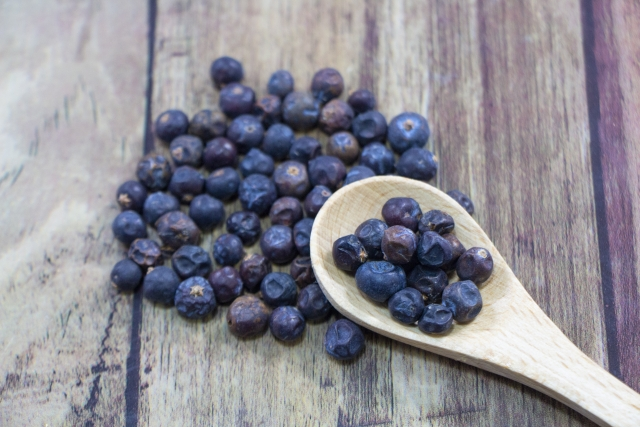

ジン
GIN
GIN
ジンとは穀物をベースとした蒸留酒にジュニパーベリーやハーブ、
スパイスなどのボタニカル素材を加え再蒸留をしたお酒の総称です。
基本的にすっきりとした味わいのお酒で独特な風味と味わいがあります。
起源はオランダにあり、成立させたのはイギリスです。
近年では世界的にクラフトジンブームが起こっており
各地の特産品などを使用した様々なフレーバーの個性的な
ボタニカルジンを楽しむことができます。
スパイスなどのボタニカル素材を加え再蒸留をしたお酒の総称です。
基本的にすっきりとした味わいのお酒で独特な風味と味わいがあります。
起源はオランダにあり、成立させたのはイギリスです。
近年では世界的にクラフトジンブームが起こっており
各地の特産品などを使用した様々なフレーバーの個性的な
ボタニカルジンを楽しむことができます。

ジュニパーベリー 杜松果のことで香りが強くスパイスとして重宝されている

ジン代表カクテル

ジントニック
マティーニ